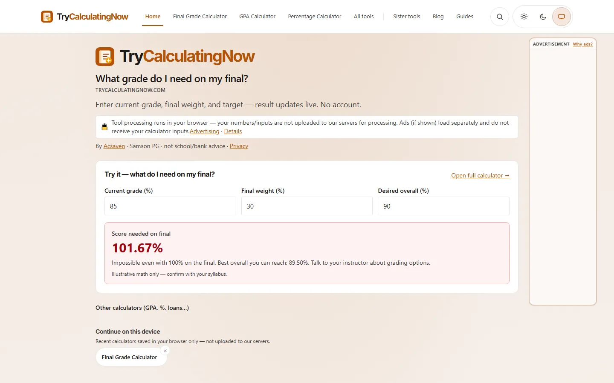
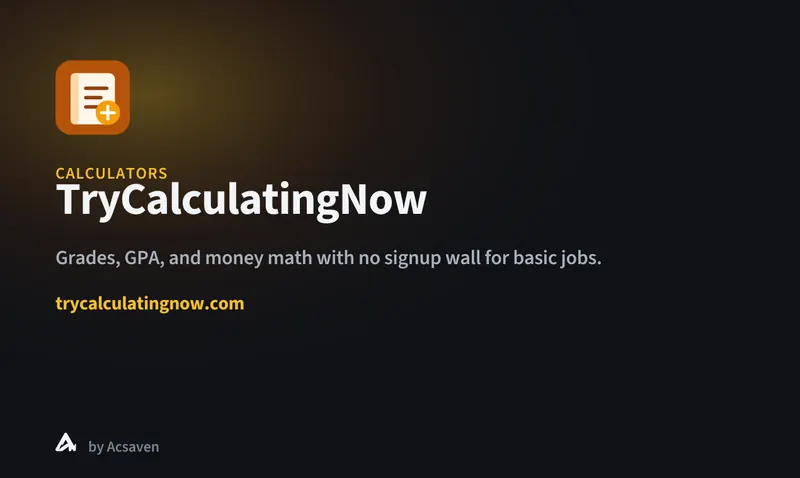

Visual archive
GPA, grades, finance, and unit calculators — fast tools without a signup wall.


GPA, grades, tax-adjacent, and everyday math.
Open a calculator and go.
Built under the Acsaven studio.
Doomsday backup: local images + static shell so the product still has a face if paid hosting ends.
© 2026 Samson P G · Offline archive